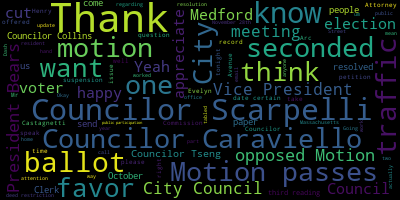
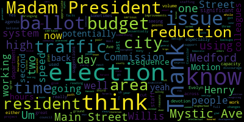
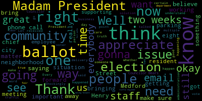
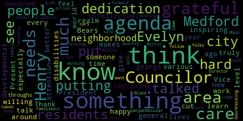

AI-generated transcript of City Council 10-24-23
English | español | português | 中国人 | kreyol ayisyen | tiếng việt | ខ្មែរ | русский | عربي | 한국인
Back to all transcripts
[Morell]: 21st regular meeting of the Metro City Council, October 24th, 2023 is called to order. Mr. Clerk, please call the roll.
[Hurtubise]: Vice President Bears.
[Bears]: Yes.
[Hurtubise]: Councilor Caraviello.
[Caraviello]: Yes.
[Hurtubise]: Councilor Collins.
[Collins]: Present.
[Hurtubise]: Councilor Knight. Councilor Knight is absent. Councilor Scarpelli.
[Scarpelli]: Present.
[Hurtubise]: Councilor Tseng.
[Tseng]: Present.
[Hurtubise]: President Morell.
[Morell]: Present. Six present, one absent. Please write us a reply. Announcements, accolades, remembrances, reports and records 23-441 offered by President Morell. Be it so resolved that the Medford City Council congratulate Henry and Evelyn Miller on being named 70th anniversary honorees by the Arc of Massachusetts. Henry and Evelyn have long worked with the Arc and for more than 50 years have advocated for and worked to improve the lives of individuals, intellectual and developmental disabilities and their families. I introduced this resolution, but I'm happy to have if there's any other Councilors wanna speak first. resolution on the Miller and family. I'm also I'll just go. I put this on a resident actually brought this to my attention as everyone who knows Henry and Evelyn there's no shortage of causes they're involved in in the city, they dedicate a lot of time their, their time to the city. as well as to the Arc of Massachusetts and specifically individuals and families that are affected by intellectual and developmental disabilities. So they're being honored by the Arc of Massachusetts as they celebrate 70 years. So I think that's just a testament to all the work they've done for this community and all the work they continue to do and their dedication. And I wanna thank the resident who brought this to my attention because there's no shortage of accolades for Henry and Evelyn. So I appreciate them bringing this to my attention as well.
[Bears]: Thank you, Madam President. Thank you for placing this on the agenda. Um, you know, we all know Henry and Evelyn we've worked with. Henry, especially in the government capacity as now our chair of our Elections Commission, but formerly as a leader of the Medford Democratic City Committee. And we know, I always get calls from him, sometimes during meetings, usually after, to comment on what's going on in the city. But also in addition to their devotion to Medford, and our community here in Medford, I think their devotion to the ARC and to people with intellectual and developmental disabilities across the Boston area, across the state is well-known as well. And that's not all that either of them do. So I think it's great that they're being honored and I'm glad that we can have a resolution recognizing the great work that both Henry and Evelyn do. Thank you.
[Morell]: Thank you. Councilor Tseng.
[Tseng]: Thank you. Henry and Evelyn, I was Councilor various that we all know for their dedication and care for Medford for our residents for the goings on of our city. I think it's, I think, just in general there's just so much to talk about with their dedication to Medford and to our residents but you know, every time I learn something new about Henry, it's truly inspiring that level of care that he's willing to give to people around him. And to see that, you know, this, I think they're, you know, I'm just so happy that they're being honored for their work. especially with improving the lives of those with intellectual and developmental disabilities, because I think it's a realm that needs so much care. It needs so much attention. And just to know that someone like Henry and Evelyn, to know that people like them are there, I think, makes me feel better about this world.
[Caraviello]: Thank you, Mr. President. I think we all know Henry and Evelyn for their work in Medford, which is tireless, but I've known Henry a long time. For those who don't know him, Henry is well-renowned throughout the state of Massachusetts for his work in that community. And he doesn't get the recognition sometimes that he deserves, but those of us in the hometown, we all know and we recognize his commitment to people with disabilities and things like that. So I just want to salute Henry for his work and glad he's getting some recognition, both him and Evelyn for all the things they do.
[Morell]: Thank you. Councilor Collins.
[Collins]: Thank you, President Morell for putting this forward. Everyone who knows Henry and Evelyn knows they truly have some of the one of the most enthusiastic, energetic households in the city of Medford, and we're all very lucky that they choose to direct so much of their energies towards positive causes, typically, and for families in Medford, and I'm just so happy to see them getting some of the recognition that they deserve. So thank you, Henry and Evelyn, for a really lifetime of positive contributions.
[Morell]: Thank you, Councilor Collins. Councilor Scarpelli.
[Scarpelli]: Thank you. I'm gonna speak more of a personal level, I've known Henry a long time. Henry and my dad were very close. And I remember many a night in Boston Ave in West Medford with Henry, my dad, and Mr. Caggiano just hanging out and drinking homemade wine and telling stories. And you just realize, I often talk about when great residents pass on, who steps up. And it's refreshing when you could talk about a resident like Henry Miller and his lovely wife. what they've done for our community. He's not someone that sits back. He sees an issue and he attacks it. And he's always there to lend his word, whether you want to hear it or not, whether you like it or not. So I appreciate his friendship and we should all be honored to have residents like the Miller and family here in Medford. So thank you, Madam President.
[Morell]: Thank you, Councilor Scarpelli. Can I have a motion? I introduced it, so I just need a motion. On the motion of Councilor Caraviello to approve, seconded by Councilor Tseng. All those in favor? Aye. All those opposed? Motion passes. Records. The records of the meeting of October 17, 2023 were passed to Councilor Scarpelli. Councilor Scarpelli.
[Scarpelli]: I found them in order and will approve, Madam President.
[Morell]: On the motion of Councilor Scarpelli, seconded by Councilor Tseng. All those in favor? Aye. All those opposed? Motion passes. Petitions, presentations, and similar papers. 23-412, Adam Dash and Associates, Attorneys at Law, to the City Clerk's Office, City of Medford, regarding 12 Dell Avenue petition to amend deed restriction petition and owners Gerald L. Alves and Janet R. Alves. Before I get into this, if folks want me to read again, this came before us at one of our September meetings. This is a petition to remove a deed restriction, and we had worked through, we had some questions, and we tabled this to a date certain, that date certain being today. That's why it's before us. Again, I'm happy to read this again if councilors would like, or I can hand it off to Attorney Dash to give us an update of where we're standing right now.
[Scarpelli]: Madam President, I think that we've already, I think coming from Representative Dash, I think that would sum it up for us and give us a brief synopsis. I know we've already gone through this, but I'd appreciate that.
[Morell]: Thank you. And I forgot to add that part of the reason that we tabled to a date certain was so that the attorney and his petitioners could meet with some city departments and see if we could find some common ground to have some language to reflect on for this proposed removal of the deed restriction. So I'll go to Attorney Dash.
[Dash]: Exactly so. Thank you, Madam President, members of the council. Yes, Adam Dash, 48 Grove Street in Summerville with Mayor Janet Alves and Jerry Alves, the owners and petitioners. Since we last saw you September 19th, we have been in communication with the planning development sustainability and with the city council about this client, my client's petitions to amend the deed restriction on the property located at 12 Dell Avenue. While these discussions have been productive, we have not reached an end result on which the council can act. So we would ask that the matter be put off for an additional period of time to allow us to come back with something. We're working on some documents. I think there'll be a lot cleaner at that point. Something like I was talking with Alicia before we started like November 28th. I know you're meeting that might work. I don't want to get into all of it too much.
[Scarpelli]: So I make a recommendation that we table this until October. until date certain, which would be the date of November 28th or meeting that close to that day, whether it's the 1st of December, if that's okay.
[Morell]: Yeah, absolutely. Any other discussion from the council or anyone else like to speak on this topic before we get that motion? Thank you.
[Scarpelli]: Thank you. Thank you.
[Morell]: So the motion from Councilor Scarpelli to table this paper once more to a date certain November 28th or November 28th meeting, seconded by Councilor Caraviello. All those in favor?
[Scarpelli]: Aye.
[Morell]: All those opposed? Motion passes. The paper is tabled to November 28th. Motions, orders and resolutions 23-442 offered by Vice President Bears. Resolved by the Medford City Council that the Traffic Commission review ways to reduce the speed and volume of traffic using Willis Avenue as a cut through, including but not limited to directing one-way traffic away from Willis Avenue and toward Mystic Avenue and Main Street. The addition of speed tables and any other design changes that were discouraged cut through traffic. be it further resolved that the Director of Traffic and Transportation provide the Council with information regarding any existing traffic flow studies for the area, or any plans to adjust traffic patterns to reduce cut-through trips. Vice President Harris.
[Bears]: Thank you, Madam President. We are seeing, and I'm hearing from residents, just the sheer amount of cut-through trips now cutting through on Willis Ave in between Main Street and Mystic Ave. just a high volume of cars, high speed, sometimes such a high volume that it's not high speed, but it is really dangerous for our neighborhood streets to be being used as through ways and thoroughfares. Residents have had some suggestions. We're working on the microphone system, I swear. But, you know, essentially people are using Willis Ave either instead of using Main Street or using Mystic Ave, they're using it to get through from Main Street to Mystic Ave or Mystic Ave to Main Street. So there were some suggestions. A, the residents are interested in what the city's general plan is in the area to have traffic try to stay on streets like Harvard. you know, Hancock and others. I have communicated with the Director of Traffic and Transportation about this. And he said that it is a difficult situation, but that he's looking into some of these solutions. Additionally, I think design changes like speed tables and potentially other design changes could discourage the cut through traffic and discourage the apps from directing people down those roads. So I would ask for my colleagues support for this motion to refer this to the Traffic Commission so they put it on their agenda. and get back to us and the residents about what our plan is for the area of South Medford that is facing these issues. Thank you.
[Tseng]: I'm very grateful that Vice President Bears has put this on the agenda. I think a year ago, I put on the agenda something about cut-throughs perpendicular to Willis, between Main and Mystic. This is something that I think folks, neighbors in the area talked about for a while, something that came up, that's always come up on Doorknocking in the area, and something that I've also talked to Director Blake about as well. I know he's working hard on it, but there needs to be more action being taken. So I'm very grateful. to my fellow Councilor for putting this on the agenda. I was in the neighborhood recently and it was just so hard even to cross the neighborhood street because cars were driving by so quickly. And it's just for families in the area with kids, that's just not safe at all. And so I'd really want us to see the city do something about it. And I'm grateful to the Councilor for kind of pushing this forward again, putting this back on the agenda again.
[Morell]: Thank you. Councilor Caraviello.
[Caraviello]: Thank you, Madam President. I appreciate Councilor Bears's putting this on there. This isn't just Willis Ave. We're gridlocked in the city. at certain times of the day. I know some of the improvements we made for safety is we've cut down the size of the roads, we've cut down turns. So now people are sitting in traffic for crazy periods of time, they're getting frustrated, and they're going down all these side roads. They say, this is just Willis-Eve. In the morning, the traffic is backing up into Winchester on Winter Street. It's backing up past the train station. This morning, Took me 38 minutes to get into the square from my house in West Medford. High Street is backed up everywhere. So it's a problem, especially between the morning hours and the afternoon hours. We're just gridlocked, no matter where you go in the city. And frustration is, people are going down all these side roads. If you use Waze, it's taking you everywhere. I mean, we've been shut down every road in the city for, you know, certain hours of the day. It's just, it's getting unbearable. I think, and I have something on the agenda that's part of this, what Councilor Bears says, that I'll talk about later, but this problem isn't, Jermaine, just to Willis Avenue. It's everywhere. I'm hearing from all the neighbors and everywhere saying, I can't take the traffic. People are flying down my streets. I thank you, and I say, if we just have the traffic commission look into, examined the whole city, not just Willis Avenue.
[Morell]: Thank you, Councilor Falco.
[Scarpelli]: Thank you, Madam President. Thank you, Councilor Bears, for bringing this forward because, you know, listen to everybody's points. It is a complicated situation, and I think that this brings me to my point. I've talked to a couple of business owners that people aren't realizing some of the traffic calming measures that we've implemented I'll give you an example, one of our local businesses had five delivery drivers that were always on the road. And what they're finding right now is he had to let go of two delivery drivers, but the outside agencies, Grubhub, all the other automobile delivery services, they've increased, he said, over 75%. And what they're doing is they don't care where they're parking. They're still parking in the bike lanes. They're still parking, you know, we've lost control. So the reason why I bring that up is because I think it's important. As we move forward to make these decisions, and I appreciate Councilor Bears bringing this up, because I have neighbors calling me about that whole neighborhood. where it is a cut through. It was no different than what a couple years ago was Fulton Street, right? It was a Fulton Street area, the corridor, and people have just forgotten. Now they're so fed up with it that they're just living with it by now. The issue I'm seeing is that it's good to do initial conversation with that traffic engineer, but I think we need to start involving the community. Because I know that I got a few phone calls the other day with the whole idea of eliminating left-hand turns. Well, people calling me saying, well, where is that going to now lead the people? They're going to lead them right into their right turns into their neighborhoods. So we're, instead of going 50-50, their discussion is now you're flooding that area with 100% of the traffic. And the truth of the matter is, there is no communication with the neighbors in those neighborhoods that are affected. So I appreciate it, but I think we need to move forward with this. I support Councilor Bears' initiative in getting our traffic engineer and working on that corridor, but at the same time, I think that we should do this shockingly. I love the word transparent because it's never used in this community, but bringing the neighborhood into the meetings, bringing the neighborhood into the meetings with the traffic engineer and say, okay, what would one solution that you think, how would that solution affect other situations. And we're not seeing that. And you know, just today to get emails and phone calls from from residents and business owners saying, you know, George, I know the sounds great. And I don't know what it checks a certain box. But the truth of the matter is, his business has increased automobile traffic that are parking, there's no enforcement use, we all see it, lift, whatever they are, whoever they are, they all they pull over wherever they want. they pull into bike lanes, they block driveways, and they do whatever, they are now dictating what happens on our streets. So I'm gonna second Councilor Bears' initiative, but I would really like to see more community participation in these decisions so we can really get a true outlook, outline of what everybody sees, the people that live there every single day, and how one issue one solution can affect another and just at least vet that out. So thank you, Madam President.
[Morell]: Thank you, Councilor Collins.
[Collins]: Thank you, President Morell. I appreciate, uh, Councilor bears for putting this forward. Um, I see this issue in action every time I try to drive to my house in South Medford from Wegmans. Um, and it's this is a citywide issue of, you know, every apartment that I've lived in in South Medford. There's one intersection that I look at 100 times a week where it seems to be a cut through street that inevitably has a daycare on that street. And you see the people get impatient with the main thoroughfare and they use the cut through, they speed down it. And it's, I agree it is a citywide issue and it's horrifying to see it every time because you're just waiting for something, you know, hair raising to happen and residents shouldn't have to live with that volume of high speed cut through traffic. And I completely agree that the widespread nature of this issue throughout the city. I think it shines a light on how what we really need is the resources to support citywide approach. I think a lot of the time with these issues, we can't control for every person who would speed if they got the opportunity. It's hard to devise a perfect quick fix. Often those aren't as those aren't the solves that we want them to be. So in the absence of resources, you know, tomorrow to type of street redesign work that would really result in safer, appropriately speeded streets, you know, I'm hoping that our traffic and transportation departments can look at Willis Avenue with haste because, you know, it's been getting, you know, this seems like it's an acute issue right now in neighborhoods. Neighbors have been speaking up about it, and it's my hope that absent, you know, the resources for a redesign, at least the solutions that seem to be working best on Willis Avenue, when we get the chance to roll those out, we can be taking the best practices and hopefully adopting those for the other many, many problem areas across the city. Thank you.
[Morell]: Thank you, Councilor Collins, and just from the chair appreciate bears bringing this up and just my fellow Councilors comments on this because I think, as we know, this is a multifaceted issue and I really appreciate the focus on looking citywide I think that's absolutely the approach we should take and I'm sure it's. at least in part happening already. But I think like so many of our issues, there is a facet of this that is at the state level, we're dealing with a deeply broken public transit system, that people they would be on the T, you know, or they wouldn't take the bus, but they're sitting in the traffic on the bus, and the T doesn't run. So you have people that are dealing with return to office. You have people who can't take the train. So we have more cars than ever on our roads. They're backing up and they're looking for ways to cut around. And we have the technology and we have the Uber Eats and we have it's, you know, it's a perfect storm. And it comes from everywhere. It backs up to Winchester because, you know, it comes out of Uber and it comes through, you know, everywhere is inching down the line as you get closer and closer to city center and we just stop moving. So I appreciate the effort to see what we can do. um, as a city, but just also recognizing that, um, the density of our community and even more so as we'll talk about the rest of this year, in part relies on a public transit system that has not been functioning for a long time. So that's embarrassing.
[Bears]: Thank you, Madam President. Thank you, my colleagues. I just wanted to add, uh, that one of the reasons that a resident raises concern with me was the kids walking to Ms. Tuck's school. And then also that I completely agree with my colleagues that this is a citywide issue. And it's one of the reasons I asked for a traffic flow study for the whole area is because even if we were to implement this on Willis, maybe it wouldn't work because it would impact other streets. So yeah, it's a serious issue. And I think it also points me towards Some of those improvements that we had heard from the folks who want to develop the large, the combined properties life sciences project on Mystic Ave, potentially some of the improvements to the area's physical infrastructure that they had talked about committing to, that could go to benefit this project, this issue. Thank you.
[Morell]: Thank you. Do you want to hit that button? I mean, I can hear you, the people on TV can't hear you.
[D'Antonio]: Oops, is it? Oh, there you go. All right.
[Morell]: Just name and address for the record.
[D'Antonio]: My name is Anthony D'Antonio, 24 Hicks Avenue. It's like a church in here, so quiet. Not that I would know, but anyway. I'm glad you brought this up, Councilor Bears, because I wanted to bring up something that we did several years ago when Chief Sacker was around. terrible parking problems down in South Medford, down on Yale Harbor, Main Street and everything. We started at the Kennedy Condominiums, a group of neighbors, must have been about 20 of us. We walked the whole neighborhood. We walked and saw the situation, the problems that we were experiencing. We wound up all the way down to Columbus Park. The problem you have is one of the things that's increased the traffic to cut through traffic is when they put that juggernaut across from the fire station. People don't want to go down there, wait for the turn, take a left. They're going down to Alexander Avenue now, or cutting across Harvard, and then they're zooming down to Willis Avenue. It's really dangerous. And the children there, I mean, the poor traffic supervisors there, they put their lives at risk over there. I mean, I can hear them yelling at the people in the morning sometimes, you know? But for every solution, the way the city is right now, it creates a problem on another part of that neighborhood. Because I don't really see any solution to divert all the traffic. All I see is a heavy duty, a heavy hand in enforcement, okay? Because that may defer or deter some of the activities that are going on there. It is, you know, I'm out five o'clock in the morning walking my dog and I bring a light and I have to flash it when I cross Willis Ave because they're flying up there. Like Councilor Beall said, if they're not doing 50, they're not doing anything, okay? And even sometimes with the light, I think they must know where they wanna run me over because it'll slow down. But anyway, I think it would be great to get together because I don't think the traffic engineer or anybody would be able to go down there and say, okay, we're gonna do this because it has to be, you have to have all the voices, you have to have what the concerns are and everything. And here's one thing that I noticed. When you're coming up Willis Avenue, and you're going to approach Hicks, or going to the left to go to Columbus School, or Missy's Steak, or Missy Tuck, you don't see the stop sign until you get right to the top of the rise. And that's dangerous, because people don't see the stop sign, so they're not slowing down. They got these great guys that take the corners really nice. Somebody's gonna get killed. I appreciate that, and I just wish that we would put something together so the neighbors can get together and say, here's our concerns, what can we do? And see what happens from there. By the way, the Aisle Street parking lot, I mean, it's still a problem. It's getting worse, just to let you know. So, thank you very much.
[Morell]: Thank you. So on the motion by Susan Bares, as seconded by Councilor Scarpelli, to refer to the Traffic Commission. All those in favor? All those opposed? Motion passes. 23-443 offered by Councilor Caraviello. Be it resolved the Medford City Council have the DCR and the traffic engineer address the light sequence on Fulton Street and the Felsway along with the light sequence at Winthrop Street and Route 16 in the interest of public safety. Councilor Caraviello.
[Caraviello]: Thank you, Madam President. This goes handed in with what Councilor Bears just talked about. Fulton Street, I know, as Councilor Scarpelli said, people are just living with it now, but it's backing up further and further up the hill, and no one's really listening, watching those signs saying, you know, resident only. They're pretty much going down all those neighborhood streets and flooding those neighborhoods as the traffic keeps getting further up. If you live in the West Method area, you're seeing the lights at Route 16 and Winter Street, three or four cars get through. And the problem over there is because there's two sets of lights on Route 16 that go off in the morning when there's really no one over there, causing the traffic to back up. So now you get three cars go through. traffic's backing up everywhere, and it's backing up on the Boston Ave now on some mornings. So along with the motion we just passed, this is something that has to be looked into. Again, this is not so much a city problem, but it's a DCR problem, and we're still waiting for the lights on South Street to get going. What do we have there? We still got the same blinking light. So now the people are going down South Street. And before, they used to get on Mystic Avenue, but now if you notice, they blocked off the other turn there. So now we're gonna be flooding Mystic Avenue with more cars, because if you come down over that way, your only access to 93 is to go all the way into Somerville now. So all we're doing is just, and just making our traffic problems larger and larger without thinking before we make decisions. So I think the council and the neighborhoods, everyone has to get together with the Traffic Commission and figure out where we're going for our traffic. It's getting worse by the day. I mean, people, the kids are late going to school in the morning. I spoke at the school the last couple of weeks and kids are complaining that they can't get to school in time. The bus can't make it there. And they're getting their three, they get three tidies and you got a problem at school. Parents who drive their kids to school can't get out of the school. So it's, it's a, the problem is just compounded around the whole city. And, and, The traffic engineer has to come together with the community and different neighborhoods to figure out how to fix this and bring the DCR to fix this light situation.
[Morell]: Thank you. President Bears.
[Bears]: Thank you, Madam President. Thank you, Councilor Caraviello, for bringing this forward. The light sequence is certainly an issue at both of these locations. And I also wonder, you know, I think it would be helpful for DCR to potentially look at peak, having a certain sequence for peak hours and then a certain sequence for the rest of the time, you know, that might help to address the backups that are happening. Really, you know, I mean, obviously there's traffic and gridlock at many hours of the day these days, but the very serious backups are concentrated to two or three hours in the morning and the evening. So I would like to see something like that as well, but I'm not amending this and I second it and I support it.
[Morell]: Thank you. So on the motion of Councilor Caraviello, seconded by Vice President Bears. All those in favor? All those opposed? Motion passes.
[Bears]: Madam President.
[Morell]: Vice President Bears.
[Bears]: Motion to take paper 23-419 for third reading and 23-444 under suspension.
[Morell]: On the motion of Vice Mayor Bears to take 23-419 for third reading and 23-444 papers in the hands of the clerk under suspension. All those in favor? All those opposed? Motion passes. Um, so I want to do that again. Do I have a second on that? Councilor Tseng. It's on the motion of Councilor Tseng, seconded by Vice President Bears. All those in favor?
[Scarpelli]: Aye.
[Morell]: All those opposed? Motion passes. So, 23-419, eligible for third reading, district improvement financing, approved for first reading in city council on September 19, 2023, advertised in the Medford Transcript and Somerville Journal, October 12, 2023, and eligible for third reading on October 24, 2023. This is an ordinance that we had I think, multiple meetings on that would just actually, Director Hunt, could you give us a super brief reminder of, or everyone watching at home, just what the DIF ordinance is? I don't want, I can do it, but you're here, so.
[Hunt]: Madam President, Alicia Hunt, Director of Planning, Development, and Sustainability. Didn't prepare this so off the top of my head. The DIF is District Improvement Financing, which is a financing structure used to allow the city to capture some of the new growth from the revenue that would be generated from new development in Medford Square into a fund specifically for use in Medford Square. The plans that you've reviewed before have all the details on dollars, numbers, et cetera, and how that works. I'm happy. Is that significant enough? Yes, thank you.
[Morell]: Do we have any questions or discussion or a motion?
[Bears]: Motion approves for third reading.
[Morell]: On the motion of Vice President Bears to approve for third reading, seconded by Councilor Tseng, Mr. Clerk, please call the roll.
[Scarpelli]: Vice President Bears? Yes.
[Hurtubise]: Councilor Caraviello? Yes. Councilor Collins? Yes. Councilor Nunez-Sapiro? No.
[Morell]: Yes, five in the affirmative, one in the negative, one absent. The motion passes for third reading. Going to papers in the hands of the clerk 23-444 offered under suspension by Councilor Scarpelli. Be it resolved that the City Council discuss a message received from the Chief of Staff regarding extra election ballots mailed to residents' homes. Councilor Scarpelli.
[Scarpelli]: Thank you, Madam President. Just to share with I know I've received multiple phone calls, especially Ward 6, that we did get an email from the chief of staff, and I'll read that if that's okay, Madam President. Yes. Dear President Morell and city councilors, we recently learned that some addresses who are requesting early voting ballots have received more than one ballot. A short while ago, Steve Smerti and I met with elections to better understand what happened. Well, the uh... Well, this process is not, it happened, there's still checks and balances that are in the system. I'm sorry, my email is breaking up. In the system that would prevent someone from being able to physically cast multiple ballots. So there are fail-safes to make sure that you cannot vote twice. Specifically, there is a unique identifier assigned to each voter and only allows them to cast a ballot once. As we learn more about how this happened and steps that are going to be taken to avoid this from reoccurring, we will update the council. So I think that what I appreciate going forward with this resolution is the first thing is just to express that multiple phone calls that are very, very concerned with voter fraud, right? And the conspiracy theorists are going crazy. But I think my concern right now is We've seen some pretty drastic issues in the last month dealing with this election. One being that I believe the ballots, there were misspelled names and they had to redo ballots. I believe that's one thing. And now with these ballots, it's not a few people. I guess I got a phone call from one person that said they requested two, they got eight. So this is scary for the sense that There's gotta be some people held accountable for this situation. And this administration is fluffing this over like it's nothing. It's costing the city a lot of money. Let's begin with that. Because if they're giving away ballots, that's a problem. If the misspelling ballots and then the ballots have to redone in a rush order to make sure that we can have a true election, this is a problem. So perception is reality. So I just, I brought this up just to explain it, understand that I've talked to a very knowledgeable former elections coordinator that told me that George is no way that, you know, what people are saying on the streets, that that person is gonna take eight votes and they're gonna go to the ballot box, they're gonna mail eight votes for so-and-so. And rest assured, that's not the way it can happen that way because of the fail safes that are on the ballot. I appreciate that. I want to make sure everybody knows that. But at the same time, I think we have to realize something. We're two weeks away from a very big election. And we've had two major flops with this election process. It doesn't look well. It doesn't look like it's being handled by a leader in this community. So again, we're moving forward for two weeks. I just pray that we're kept in the loop with everything that's happening because again, unfortunately, I was gonna bring this forth. So I'm glad we got the email beforehand because I believe it was only one district, one precinct that really- Yeah. Okay. Oh, good. Okay. So, but again, I think moving forward, we need to, we need to buckle down. I mean, this is, this is, you know, you see what's going on in this country. Every, the issue in this country is in what's inflammatory is voter fraud and everybody's going crazy about it. We're not doing ourselves any favors in this community. So I just had to, I had to share my frustration. I had to calm some people's nerves and understand publicly that there are fail safes in place, even though they're getting 10 ballots. And I'm sure I'm gonna get text message and emails later saying, oh, no way, they'll find a way. But there isn't a way that they can use all eight ballots. So, but again, moving forward, I think we really have to tighten this department up. And it starts with the mayor. And I know that it sounds political, but truly, She's the CEO of this community, and this is happening under her watch. Something has to be done. So I appreciate it, Madam President.
[Morell]: Thank you, Councilor Scarpelli, and I'll get to other councils. I did reach out to elections manager Melissa Ripley, and she's recovering from surgery, so she couldn't attend, but she did send me, I had some questions myself, just some basic information. So she did apologize for not being able to be here tonight, and she stated that 5,100 ballots were sent out over the course of two days, At this point, the percentage of voters affected is less than 1%. The commission is reviewing the process to ensure that they're putting stopgaps in place to avoid this situation in the future, and they will be reviewing all batches of printed label to ensure that voters only receive one ballot. For voters that receive two ballots, you can either shred one or you can drop the extra ballot, and the ballot collection has been located outside of City Hall or outside of the Election Commission's office. The State Election Division has a robust computer database that assigns each voter a unique ID. When casting a ballot, if a voter were to send in two ballots, only one ballot would be counted. The other ballot would be rejected, and it would be filed accordingly. She says, we want to assure the voters that our job is to provide the residents and candidates with a fair and equitable election. Going to Councilor Collins, then Vice President Bears.
[Collins]: Thank you, President Morell, and I appreciate you sharing that update. I also appreciate Councilor Scarpelli bringing this forward, and I appreciate your efforts to get out ahead of the issue. And I have a lot of concerns about this, and one of them is making sure that we're, since this issue is known, that we're being proactive with how we're communicating about it, and letting people know that this election is going to be, you know, has been above board, will be above board, and not sowing confusion. Because obviously, I think you said it very well, Councilor Scarpelli, that's the last thing that we need and it's unfortunate to have issues like this come up at this point in kind of the national mood around elections. And so, using this platform to reassure the voters, I think is very productive. I reached out to the Chief of Staff after seeing the update this afternoon with some questions, really glad to hear that. Manager Ripley already responded. to shed some light on the scale of the problem. That was one of the questions I had, as well as, you know, when we say checks and balances, I think it's important for us to know exactly what those are so that we can, you know, again, be reassuring residents about, you know, exactly the how and the why of this not being an issue for election integrity. So it's great to know, you know, the nuts and bolts for those who don't already know about how the state-assigned voter IDs. I didn't. It's great to know about that process so that we can all feel assured that, you know, extra ballots, if they're not disposed of before people get to City Hall, will not be counted. I think that's really important to emphasize. So it's unfortunate. I think it's important that we you know, be transparent about the mistakes that have been made and be transparent about how exactly they're getting fixed. And I'm glad that we are being properly hasty and responsible about fixing the issue. And clearly, you know, making sure that this type of snafu does not keep happening in this office is something that I'm sure we'll all be, you know, very keen on communicating with that office about in the future, because this isn't what Medford needs.
[Morell]: Thank you. President Bears.
[Bears]: Thank you, Madam President. Um, I think, uh, you know, to Councilors here probably points both of them. Number one. I appreciate that. We've reiterated multiple times. You know that the ballots can't be used, but I actually appreciate bringing up the other issue. Um, which was the misprinted ballots because I believe all the ballots had to be reported. That's a significant cost to the city. Um, last budget, we were very clear. I think all of us on this council that we were last two budgets, but especially last budget that we were uncomfortable with the reductions in the elections department. Under the prior system before we moved to the independent elections commission system, we had as many as five staff working full time on elections. We now have two staff working full time on elections. I believe there's a vacancy that's unfilled. So if that were to be filled, it would be up to three. But that is a significant reduction in staffing, a significant reduction in a second pair of eyes to double check the ballot, a second pair of eyes to be able to supervise the distribution of mail ballots. And I think given the facts on the ground today are the same as the facts on the ground before. You can register later. Eventually, I'm guessing we'll end up with same day registration. We have mail ballots. We have early ballots. We have election day. We have essentially all year elections a lot of the time. You know, there's another election in March and there's an election in September and an election in November. So there's going to be four elections in the next 12 months. I don't think that merits a reduction in staff and a reduction in budget for the department that should be handling that. That's something this council has raised for two budget cycles consecutively, and I think we're seeing that it's an issue. So I hope that in the future budgets that that issue is addressed and the staffing for that department is at least made whole so that there's additional resources and capacity for the administration of elections here in the city.
[Scarpelli]: Thank you. Councilor Bears brings up a great point, not to be insensitive, but we're two weeks away. Who else is supporting? If we have an elections coordinator who's not here two weeks before the election with these issues, who's that? That is true. It's frightening. Who's supporting that department right now? Do we have any information with that?
[Morell]: She's I believe she was in or she's working remotely. She's not.
[Scarpelli]: Okay.
[Morell]: All right.
[Scarpelli]: Again, I didn't want but I appreciate because I think it is so sensitive right now, that it is heightened. And the fact that who's supporting, you know, I don't, you know, we were very fortunate under clerk, he, you know, we had a great team together. So, and Councilor Bears is right, that's something we talked about at budget time, of the reduction of staff, and situations happen. Every employee, they have the right, if they're injured, or sick, or hurt, that they need to take care of what they need to care. I don't wanna be insensitive to that at all, but the truth of the matter is, we're still two weeks away from a very important election, in my eyes, because I'm running. And, you know, I think it's important that I'd like to, if we can, I'd like to make a motion to see, can we ask the administration, are they supporting the staff, even if our director is on remotely, having people in the office is so important. you know, is this somebody that are they working with maybe getting someone in for the next two weeks and three weeks to try to make sure that we're We're, we're filling the gaps.
[Morell]: Yeah. And she may be, I mean, she could have been here today for all I know. She just could have an afternoon thing. Like I just, she just couldn't attend tonight because of a medical issue, but okay.
[Scarpelli]: So you tell me what we're doing.
[Morell]: All right. Thanks. Madam president.
[Scarpelli]: I don't want to say she hasn't been in or I think it was just like, she couldn't attend tonight because I'm just, and I'm just saying, if this is something that's longterm, we really need to find a way that we have assisted, we get assistance to that office.
[Morell]: And I think that's a fair question. Okay. Thank you. Councilor Caraviello.
[Caraviello]: Thank you, Madam President. And Councilor Bears hit the nail on the head here. You know, this is something we fought for, was to have a fully staffed election department. And here we are, two weeks out, and we still never hired anybody. And we're working with volunteers down there. And these are, like I said, these are mistakes that shouldn't be happening. Someone should have proofread the ballots before they went out instead of costing us thousands of dollars to reprint them and have them sent in. you know, having a mistake like this, where people are getting seven, eight, nine ballots. I know, as Councilor Scarpelli has brought up, you know, there's safeguards in place, but perception is reality nowadays, and it's all over the news about voter fraud, and this is what people talk about. This is what's going around the community. How was our election going to be handled? I mean, do we have enough people to man the polls this year? I mean, are we gonna be fully staffed? We don't know. So I think, This council deserves some kind of explanation on if we're going to be ready for our election time in two weeks.
[Morell]: Thank you. Yeah, as this is under suspension, I don't think we have any motions, but I think we can always come in. I'm happy to communicate that and just make sure we can get an update on staff and understand where we are.
[Scarpelli]: Appreciate that.
[Morell]: You're under suspension. All we have left is public participation. I mean, there was no motion made. I'm happy to, I'll just send it. I'm happy to send an email. I'm happy to send an email and update the council. Public participation. To Honorable City Council, we undersign and respectfully pray Andrew P. Castagnetti to speak on the affairs in Medford on October 24th, 2023. Signed Andrew Castagnetti. Mr. Castagnetti, whenever you're ready. Okay.
[Castagnetti]: Thank you, Council President. Good evening, Honorable Councilors. I haven't been here in a while, and I'll make this very brief. It is election time in two weeks, and I have some pros and cons for the city of Medford that concern me and other voters. Number one, on a positive note, we have the best, as you know, location in all of New England, five miles north of Boston, Interstate Route 93. Can't beat it, and mostly residential community, by the way. On the con side, I live in Mystic Ave, and in 1960, they built Route 93. That was 63 years ago. Mr. Gav was kind of like in rough condition business-wise in those days. It's the same old song and dance, mostly cars and car lots and too many cars. And it's just a disaster. So I was thinking out loud here that we should have requests for proposals from the best you can get, even from the boys from New York City and the New York Minute. to give us the best, as Murata would say, best possible use for that land while we're still here. And don't forget, it's like 63-year relic. This is a great opportunity. It's probably 35 times more valuable today than it was 63 years ago. So if I was in charge, I would have mixed shoes, like the Roman Empire did business The first floor would be business, commercial, even a 24-hour donut and coffee shop, and other commercial businesses, retail. Second floor, you could do offices, whatever, insurance companies, et cetera. And the third floor up to this, whatever, six, seven, eight, nine, especially on the east side of the, which is next to 93, it's a lot of land back there. You could have affordable housing. I mean really affordable housing instead of what they call affordable. And this is a golden opportunity, especially with the rental problems these days. And then maybe after you have all these residential units, maybe you'd be able to adopt by chapter 59, section 5C, the owner-occupied real estate tax exemption. Although not everybody would be grateful about that. So I guess I said enough about that golden opportunity. But first we have safety issues in the city. And number one I have is the same old song from when I was here three months ago. It's Roosevelt Circle. Get on 93 right here, go north, first exit is Roosevelt Circle. As you're going around the intersection, the roundabouts, as they say in Great Britain, there's weeds that are taller than me, they're six feet tall. And it's an obstruction, it's a danger, it's a safety problem. And the cars are flying around there. And guess what I found out, coming back from my friends from our walk around the Hidden Reservoir, coming down 93, from Stoneham to Roseville Circle, it's worse. Not only do you have eight foot weeds, you have 30, 40, 50 foot high junk trees, wild. And you cannot see what's coming around the bend on the roundabout. There's been too many accidents there. You can say, hey Andrew, this is MG, it's a state issue. Do you know something? I'm not that smart, maybe you people are city councilors, that are smarter and more honorable. Maybe you should just check it out. And if you feel it's an issue, you drop the dime to the state and not leave it on Castagnetti. You might have more pull. I'm tired. I've been fighting the city for too long. And I've come up with solutions. I'm not trying to be negative. Another one's a problem. I'm gonna talk fast because you're not gonna wanna hear about this. You're on Mystic Avenue from Somerville driving 38 north towards Medford Square. As you pass Harvard Street, you have two lanes on both sides. There's no cars parked there at all. It's a state road. It's the old highway to Boston before Route 93. And then all of a sudden, we're doing 40, 50, some are doing 60 miles an hour on average. I'm not pushing the number here. And all of a sudden, it merges into one lane. And instead of no cars, right after Atlas and Hancock Street, as you mentioned earlier, Councilor, there's five cars parked there. Why can't they park further down in front of the VFW or the Verizon building? That gives us an extra 100 feet to make the adjustment. I see a car roll over there with an accident with an elderly lady. There's too many accidents in that location. I'm not gonna say it again for the fourth time, so I said it for the third time. I wonder about this missing bike path right behind you, Councilor Morell. The bike path comes from Arlington, West Medford, it goes right into Medford Square, right behind you, at the Senior Citizen Center, it stops. It's a half a mile blockage. Once you get to the Doug Andrews School, 23 years ago they were built, you had a bike path all the way to take the subway, you don't have to worry about driving down Willis Ave. You could take your bicycle, you could walk too, or a wheelchair. So what happened to this missing bike path? Can anyone tell me what's going on? When will it be done? All these people want more transportation, but what is going on? It's been five, six, seven years I've been working on this and broke my head in one of the potholes there. Can someone tell me, please?
[Bears]: I don't have answers to all your questions, but- No, no, just the one on the bike path. On the bike path, yeah. Yes, sir. My understanding is that that did go out to bid and is going to be under construction next year.
[Castagnetti]: Cool, and by the way, it's gonna be within 12 feet of mean high tide next to the river, I hope, because that's the Massachusetts law back in the 1700s on the riparian rights. You know about that, right, Councilor? I absolutely do. I'm glad you do. I always said you were smart. But let's get the job done.
[Bears]: I agree with you.
[Castagnetti]: I don't wanna get PO'd, man.
[Bears]: No, I hear you.
[Castagnetti]: I wanna be able to use it with a bicycle, and not have, down the road, they have to use a wheelchair.
[Bears]: Yeah.
[Castagnetti]: Oh, come on, this is ridiculous. Okay, I'm gonna keep my animation down. And what about the marathon bombing? 2000, what? My wife had cancer, I was in Mass General. I wanted to go, she said, I don't want to go, let's go, I've never been there. Thank God we didn't go. And I missed the Dalai Lama too, at the Buddhist temple. But the point is, McGlynn, Mayor McGlynn, he got a lot of business people at the Chamber of Commerce thousands, tens of thousands, hundreds of thousands to build the Kristin Campbell fountain. I don't see any activity. I don't see any water spouting out of that for at least months, years. But Mr. Scarpelli, Mr. Caraviello, can you help me?
[Caraviello]: I can answer you.
[Castagnetti]: The parts are on order? They can't get the parts?
[Caraviello]: No. There is money to fix the fountain. It's in the trust funds. That's overseen by a group. From what I'm told from the people that are running the trust fund, they're waiting for the city engineer to submit a plan on A, who's going to do the work, who's going to maintain the fountain, and the landscape plan, so that's what I'm told, is to hang up, and until the trustees get the plan, they're not going to release the funds. The funds are there to fix it, though.
[Castagnetti]: Where is it, a pump? What's a pump, $100?
[Caraviello]: Whatever it is, they wanna see a plan. They wanna see a maintenance plan, who's gonna do the work, and who's gonna maintain the grounds around the fountain. So that's, That's what I've been told is the holdup there. So the funds are there.
[Castagnetti]: I know you've always been good about these things, Councilor. I appreciate your help. You have good common sense. I want to say that. I'm going to say it again later.
[Morell]: We're approaching 10 minutes. I'm not going to cut you off.
[Castagnetti]: Where is the scoop? I shouldn't say this. Where is the scoop on all the silence with the airplanes running? runway 33L. It's another construction. Haven't heard a plane in months or months. That's why I'm going. Yeah, just don't jinx it. Why? Somebody must know the answer.
[Morell]: It was down for work in August, but it's been quiet before August and it's been quiet since, so I don't know.
[Castagnetti]: Maybe they forgot about us.
[Morell]: Let's hope.
[Castagnetti]: Let's hope is correct. I must thank City Councilor Caraviello for having great common sense all these years. I really, we thank you for that. Thank you. And hopefully your concern will come to materialize and fruition about that guy, that big guy north of Richmond might cause a drag us into a World War III.
[Morell]: I just hope that doesn't come to fruition.
[Castagnetti]: I saw buying Camel cigarettes at 1750. It must be Biden economics. It used to be 28 cents a pack. 28 cents a pack, 1962, when the first bar movie came out, Dr. No. The stock market went up so many times, the cigarettes went up more, 20% more than the Dow Jones. Can you imagine? Larry knows what I'm speaking about. Okay, you city councilors, would you want to take this opportunity to tell the voters of your best accomplishment in the past two years, starting with Councilor Knight, but I think he's indisposed.
[Morell]: All right.
[Castagnetti]: Going to tell us, can you, can Council build some of your best accomplishment in the last two years? And I want to go around the horn. I'm sure the voters want to know.
[Morell]: Well, this feels like campaigning, and I know we can't campaign. We can't campaign behind the rails.
[Castagnetti]: You don't get into that, you said? No? Okay. Lastly, I have a really, really cool idea for the city, for the best landmark. What's the, it's essential or something? The best landmark in the city. Do you know what the best landmark would be in your opinions? Not the big or low building. Do you anybody have an idea? The best landmark in this city, what would that be? Like a square? Wright's Tower. Wright's Tower. How about the London? How about the footbridge behind Old Craddock's? The footbridge over the Mystic River. I think it would be really cool If you did a like a salt and pepper thing like the bridge in Boston Council bid maybe you take $100 instead. I'm, I'm offering $100. I donate this to the city to put two strands of Christmas lights on each side of that footbridge since you don't know where to send that direction. It would look really cool with the lights glowing, have it come on at dusk. And by the way, my old electrician used to work for the city, Jimmy Abagast told me, and I saw it, the pole was right there. It's called the electric pole. I could spit at it. It's only five feet away from the bridge. So Mr. City messenger, please take this. I want you to do that. I want you to message it over there. Please write a check. Can you please get this to the mayor?
[Morell]: You can donate additional on your property tax bills, which I know you.
[Bears]: I'm done. No, no, no, no. We got to give that back. We got to give it back, Larry.
[Castagnetti]: No, I want you to give it to the mayor.
[Morell]: Yeah. Please don't.
[Castagnetti]: I'm not dropping it off at the treasurer's office because when it comes to money, McGrath said he couldn't trust his own shadow.
[Morell]: For those following at home, I can't be here.
[Castagnetti]: We should take a moment of silence for what happened in Israel.
[Morell]: Mr. Castagnetti, thank you. You're well past your time. There's not many people here tonight, so I don't want to cut you off, but I appreciate it.
[Castagnetti]: You don't want the Christmas lights on the- We do, but- It sounds like a lovely idea.
[Morell]: I don't want that $100. No one wants that $100.
[Bears]: It's real.
[Morell]: I know, that's the problem.
[Bears]: If it was fake, it would be better.
[Morell]: Is there anyone else who would like to speak?
[Coloso]: Good evening, Madam President, city councilors, and city clerk. My name is Linda Coloso. I live at 64 Forest Street in Medford. As you know, I am the former business manager at the Medford Police. I was employed there for nine years and two months. I was waiting to receive my COVID pay and my retro pay as I resigned on July 21st, 2023. Five weeks later, I guess the cost of living assessments were passed. I mean, the ink wasn't even dry on my resignation letter. I was informed that I would get it. Local 25 had contacted the HR department here and they said I would get both the COVID pay and the COLA pay. I went to visit the HR department last Wednesday and they looked at me kind of puzzled and said, I'm not on the list. So now I'm concerned about it. And I mean, it's been a past practice in processing payroll for the last nine years and two months for police that any retired person or resignee police officer always received their pay. Um, I'm not sure why they're stating that I may not get it now. And I was hoping I could get some clarity tonight on the timing of the processing of the payments.
[Morell]: Thank you. Yeah.
[Scarpelli]: Well, and in a municipality, anytime there is any any pay that was that was distinguished during a certain time when a retiree was on duty, they would It's automatic, this is confusing me. Maybe it's clerical error, but you can't do that. It's not fair labor, I believe. No, it's definitely a fair labor act issue. I mean, you're talking about, again, our working men and women in our community, they're telling you that the money that everybody's getting, while you were there too, by the way, through the through the worst time of our hyperinflation, you were there.
[Coloso]: And it works every day during COVID.
[Scarpelli]: I know that. I don't know if the President can reach out to the city administration to get an answer by as soon as they can to get us an email that the chief of staff can inform us why this is happening. Do you know if there's anybody else? Is that how you're the only person?
[Coloso]: The crime analyst, Rob McIntyre, he was told that he was going to receive it, and now they don't return calls, and they kind of brush him off.
[Scarpelli]: I believe anything that's negotiated... Right, I was active in negotiations, and I worked. Anything that's negotiated during the time that any retiree was still in place, they would be... I didn't retire, I actually resigned. Excuse me, or resigned, doesn't matter. As long as you're working during that time, you are giving the same amount, same treatment, same incentives that they received.
[Coloso]: All my dues were current. I attended all the meetings for the negotiations.
[Scarpelli]: Shockingly, we have another issue with our labor question with our working men and women here at City Hall. Shockingly. So if we can, I think we need to get word on this and get get it back to us as soon as possible because if, if we haven't, if we have one that's one too many, it was city employees.
[Coloso]: I mean, I was an excellent employee. I left six hours of sick time on the books. And I feel like hard work didn't pay off in the city for me, you know, and a lot of people starting to feel that way. That's why there's a mass exodus.
[Scarpelli]: Right, well, we can see that, but, you know, rumor has it there's a great team somewhere in here. We haven't seen it. So, you know, I think that, I don't know who to ask because I don't know what department's in and out, but- I'll reach out to the chief of staff. If we can go HR, chief of staff.
[Coloso]: And I just want to reiterate that the contract expired July, 2019. You're talking four years later, during a time of hyperinflation, worked every day during COVID, and I was supposed to receive both, and now they're acting like I'm not gonna receive anything.
[Scarpelli]: Well, and then ask if there's any other employees, because I bet you there's other employees that just washed their hands of Medford and said, what? Typical Medford, they walk away. But if they earned it, they deserve it.
[Coloso]: Right. Just pay us what we deserve. I mean, why invite more lawsuits? That's insanity. It's not feasible.
[Scarpelli]: It's not worth it. It's not fair to you. You deserve it. Thank you. Let's get some answers, Madam President. And then if we can, I'll put it on as a resolution for our next meeting to make sure that we follow up. Thank you very much. Good luck, everyone.
[Morell]: Thank you. Appreciate it. Yeah, I'll get that. I'll get that out tonight. Anyone else for public participation? That is the end of our agenda, I believe. On the motion of Councilor Scarpelli to adjourn, seconded by Councilor Caraviello. Actually, before we adjourn, because of the election, our next regular meeting will be on November 14th. Folks have any issues? In the meantime, email the council, call the council, and we'll get things sorted out. So our next- Thank you, thank you. So on the motion of Councilor Scarpelli, seconded by Councilor Caraviello. All those in favor? All those opposed? Motion passes. Meeting is adjourned.
Morell
total time: 11.68 minutes
total words: 2082

|
Bears
total time: 6.71 minutes
total words: 1170

|
Caraviello
total time: 6.75 minutes
total words: 1153

|
Collins
total time: 4.55 minutes
total words: 830
|
Scarpelli
total time: 14.16 minutes
total words: 2345

|
Tseng
total time: 2.16 minutes
total words: 339

|
|
|
|
|
|
|
|
|
|
|
|
|
Back to all transcripts
{kind=link}
{kind=link}
{kind=link}
{kind=link}
{kind=link}